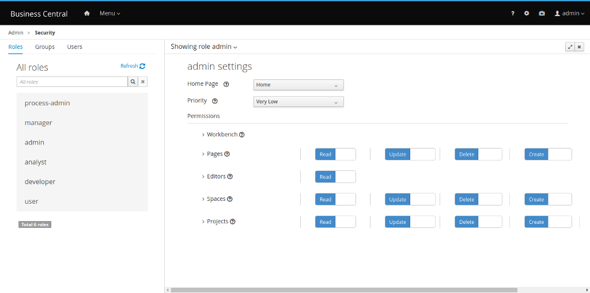
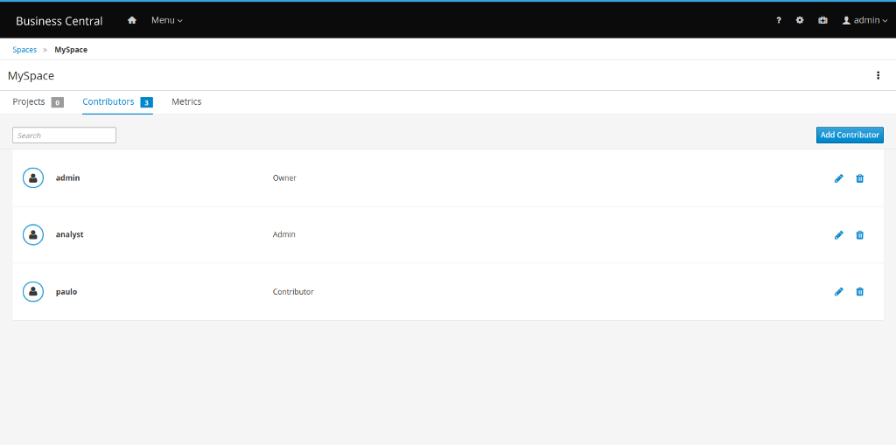

Contributors on Business Central
Several collaboration features were added to Business Central. For the 7.23.0 release, we are providing an optional way to manage spaces and projects access.
Working with contributors
Until now, the only way to grant access to spaces and projects was through the Security Management screen:

With the introduction of this new feature, it is now possible to manage spaces and projects permissions directly in their respective screens, using the Contributors tab. When contributors are added to a space, they are able to open it and see its projects and other information available. Based on their contributor role, they also have the following permissions granted:
- Owner: Update contributors, delete the space, create projects and delete projects.
- Admin: Update contributors (except owners) and create projects.
- Contributor: Create projects.

When a project is created inside a space, its contributors will be copied from the space, and the project creator become owner of the new project. It is also possible to add new contributors to the project, as long as they are also contributors of its space. They are able to view the project and, depending on their role, they also have the following permissions granted:
- Owner: Update, build, deploy and delete the project.
- Admin: Update, build and deploy the project.
- Contributor: Update and build the project.

The security check is using both sources (Security Management screen and contributors) to grant or deny permissions to spaces and projects (Inclusive OR). This means, for instance, that if a user has the security permission to delete a space and/or is a owner of that space, then he or she will be able to delete the space.
To summarize, we’ve created three roles integrated directly into spaces and projects (Contributor/Admin/Owner). This will allow you to fine-tune the permissions on your spaces and projects, and soon this will deprecate Security Permissions for spaces and projects.
Keep tuned for our next post, talking more about how to customize these permissions for each branch in the project, depending on the rule of the contributor.
Contributors on Business Central was originally published in kie-tooling on Medium, where people are continuing the conversation by highlighting and responding to this story.